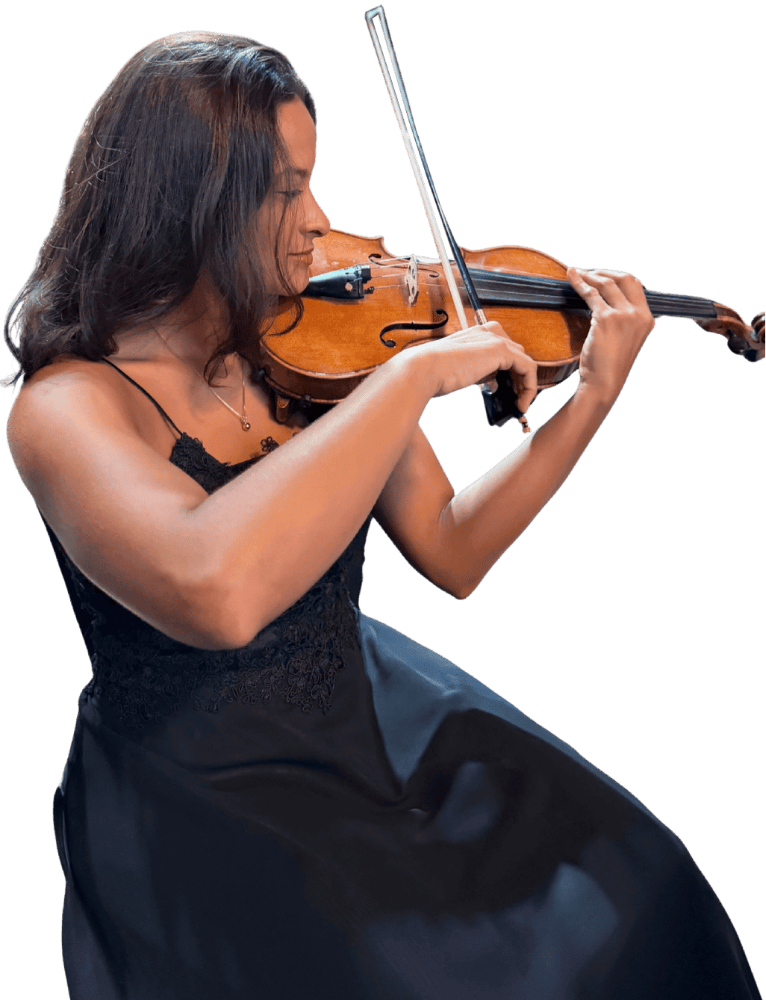

PâmelaCavalcante
Sou violinista, educadora musical e pós-graduada em Musicoterapia — uno técnica, arte e sensibilidade humana em cada aula e apresentação.

Sobre
Sou violinista, educadora musical e pós-graduada em Musicoterapia. Sou licenciada em Música pela Universidade Estadual do Ceará (UECE) e atuo como professora de violino e iniciação ao piano, com um trabalho voltado para a formação técnica, artística e humana dos meus alunos.
Como instrumentista, integro grupos e projetos musicais, participando de apresentações, concertos e eventos culturais. Minha formação em Musicoterapia amplia meu olhar pedagógico, permitindo uma atuação sensível às necessidades individuais de cada estudante e processos de aprendizagem mais significativos.
Minha trajetória é marcada pelo compromisso com a excelência musical, pela constante busca por aperfeiçoamento profissional e pela valorização da música como ferramenta de desenvolvimento, expressão e inclusão.
Licenciatura em Música
Universidade Estadual do Ceará (UECE)Pós-graduação em Musicoterapia
Centro Biomédico de Música (CBM), São PauloOrquestra Sinfônica da UECE
ViolinistaQuarteto Amábille
Música de câmaraProfessora particular
Violino e iniciação ao pianoAperfeiçoamento contínuo
Ao longo da minha trajetória, participei de festivais, cursos de aperfeiçoamento e atividades formativas voltadas para:
Orquestra Sinfônica da UECE
Atuo como violinista da Orquestra Sinfônica da Universidade Estadual do Ceará (OSUECE).
- Concertos
- Eventos culturais
- Projetos de difusão musical
Quarteto Amábille
Integro o Quarteto Amábille, grupo de música de câmara dedicado a apresentações em eventos e concertos.
Ver o quarteto no Instagram →Aulas particulares
Ofereço aulas particulares de violino e iniciação ao piano, com atendimento individualizado para crianças, jovens e adultos.
- Violino
- Iniciação ao piano
- Foco no desenvolvimento técnico, artístico e musical
Eventos
Realizo atuações musicais em cerimônias e celebrações, com a proposta de oferecer experiências musicais personalizadas.
- Casamentos
- Cerimônias
- Homenagens
- Eventos sociais